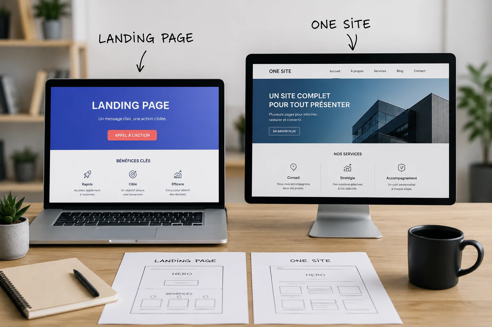

Par Central Web Agency · Mis à jour le

Une landing page sert une action précise. Un site one-page présente une activité en sections sur une seule URL. Une vitrine multipage détaille plusieurs prestations. Le premier choix dépend de ce que vos visiteurs doivent pouvoir trouver ou faire.
Les 3 formats en une phrase
- Site Vitrine classique : plusieurs pages (accueil, services, à propos, contact…) qui présentent l'ensemble de votre activité.
- Landing Page : une seule page, entièrement dédiée à une seule offre ou une seule action précise.
- One-Page : une seule page aussi, mais qui condense l'ensemble de votre activité en sections qui s'enchaînent au scroll.
La confusion vient souvent du fait que Landing Page et One-Page sont toutes les deux "une seule page". La vraie différence n'est pas le nombre de pages, c'est l'objectif.
Le Site Vitrine classique : pour qui ?
Le site vitrine classique est composé de plusieurs pages distinctes, avec un menu de navigation. Chaque page peut approfondir une prestation et répondre à un besoin différent. La visibilité dépend aussi de la qualité du contenu et de son accessibilité.
C'est le bon choix si :
- Vous proposez plusieurs prestations distinctes
- Vous souhaitez consacrer une page à chaque prestation importante
- Vous avez besoin d'un blog pour publier régulièrement
- Vos clients ont besoin de plusieurs informations avant de vous contacter (tarifs, avis, réalisations, zone d'intervention…)
Exemples illustratifs : un artisan qui propose plusieurs services, un restaurant avec sa carte, ses horaires et ses réservations, une profession libérale avec plusieurs domaines de compétence.
La Landing Page : pour qui ?
La Landing Page (page d'atterrissage) n'a qu'un seul but : convertir le visiteur sur une action précise — laisser ses coordonnées, s'inscrire à un événement, profiter d'une offre limitée dans le temps. Tout sur la page pousse vers cette unique action, sans distraction.
C'est le bon choix si :
- Vous lancez une campagne publicitaire (Google Ads, Meta Ads)
- Vous voulez promouvoir une offre ponctuelle ou un événement
- Vous testez le marché pour un nouveau produit ou service
- Vous voulez mesurer une action, comme une inscription ou une demande
Une landing page peut recevoir du trafic publicitaire, direct ou naturel. Sa capacité à apparaître sur Google dépend de son accessibilité, de son contenu et de l’intention ciblée ; le format à une seule page ne l’exclut pas du référencement.
Exemple illustratif : un coach sportif lance un programme de huit semaines et recueille les inscriptions sur une page dédiée.
La One-Page : pour qui ?
La One-Page ressemble à un site vitrine classique, mais condensé en une seule page que l'on parcourt par sections (présentation, services, à propos, avis, contact). C'est le format le plus simple et le plus rapide à mettre en place.
C'est le bon choix si :
- Votre activité est simple à présenter, sans besoin de plusieurs pages distinctes
- Vous démarrez votre activité et voulez une présence en ligne rapide et économique
- Vous n'avez pas besoin de blog ni de détailler vos prestations sur plusieurs pages distinctes
- Vous voulez une "carte de visite en ligne" claire et soignée
Une One-Page rassemble tout le contenu sur une seule URL. Si vos prestations deviennent nombreuses ou demandent des explications différentes, une structure multipage apporte davantage d’espace pour les détailler.
Exemple illustratif : un freelance qui démarre, un indépendant avec une offre simple et unique, un commerce de proximité qui veut juste être trouvable et présenté correctement en ligne.
Comparatif des usages et tarifs de départ
| Format | Usage principal | Prix TTC |
|---|---|---|
| Landing page | Une offre, une action | 450 € |
| Site one-page | Activité présentée sur une page | 650 € |
| Vitrine multipage | Prestations détaillées sur plusieurs pages | 950 € |
Quand un site administrable devient-il pertinent ?
Un site administrable permet à votre équipe de modifier les contenus prévus depuis un espace de gestion. Ce besoin peut s’ajouter à une vitrine lorsqu’il faut actualiser souvent une carte, des fiches ou des disponibilités. Un site administrable démarre à 2 500 € TTC sur devis. Des comptes clients ou des fonctionnalités métier correspondent à des périmètres distincts. Les formules dynamiques précisent les possibilités : espace membre dès 3 200 € TTC et plateforme métier dès 5 000 € TTC, selon devis.
Comment choisir selon votre activité
- Un artisan qui propose plusieurs prestations peut les détailler sur une vitrine multipage.
- Un coach qui lance une offre ponctuelle peut réunir la présentation et l’inscription sur une landing page.
- Une activité simple à présenter peut tenir sur un site one-page.
- Un restaurant peut consacrer des pages distinctes à la carte, aux horaires et aux modalités de réservation.
- Exemple illustratif. Un cabinet peut séparer ses domaines d’intervention, ses informations pratiques et ses coordonnées. La fiche site pour les métiers du droit précise les contenus de présentation adaptés à ce type de projet.
Le bon format n'est pas le plus impressionnant. C'est celui qui correspond exactement à votre objectif.
Notre recommandation chez Central Web Agency
Chez Central Web Agency, nous proposons les trois formats — Site Vitrine classique, Landing Page et One-Page — et nous vous orientons vers celui qui correspond réellement à votre activité et à votre budget, pas vers le plus cher.
Consultez les formules de création clés en main et notre guide du coût d’un site vitrine pour comparer le périmètre et préparer votre budget. La création est facturée en paiement unique. Après livraison, la maintenance est facultative et facturée séparément, dès 39 €/mois pour une vitrine ou 99 €/mois pour un site dynamique. TVA non applicable, art. 293 B du CGI. Tous les tarifs figurent sur la page Nos offres.
Si vous hésitez encore entre les trois, le plus simple reste d'en discuter directement : en quelques minutes, on identifie ensemble le format le plus adapté à votre activité.